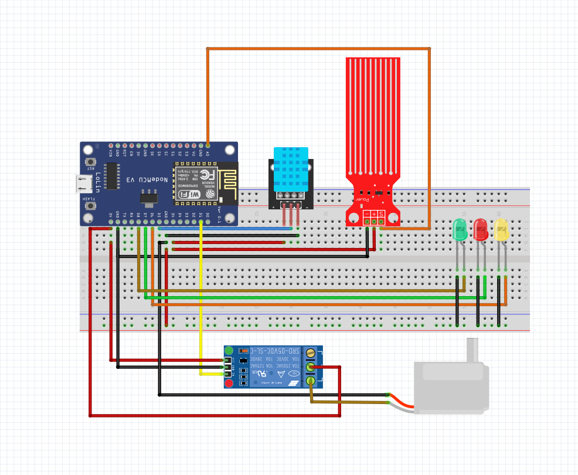
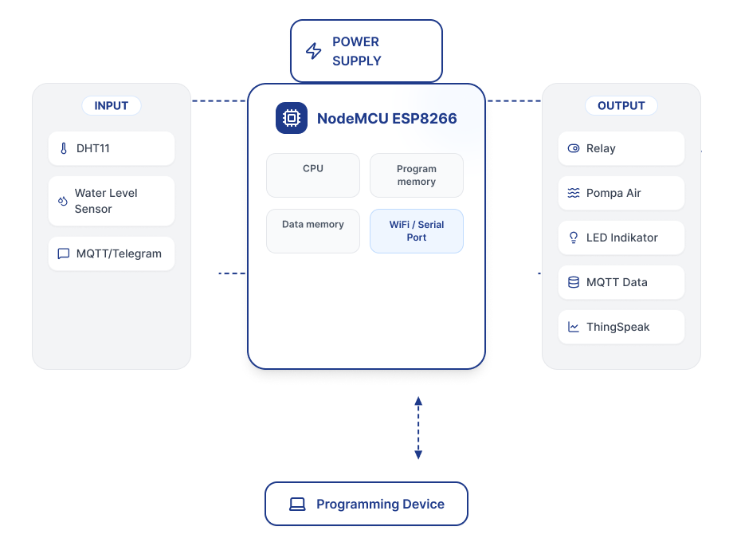
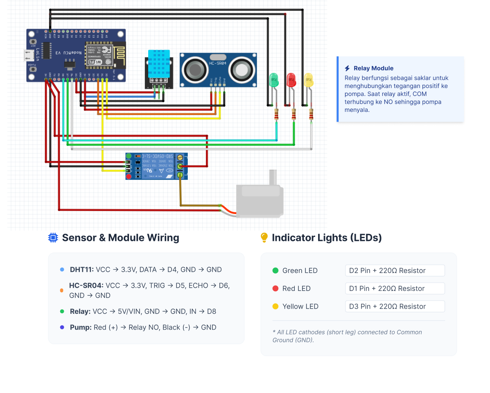
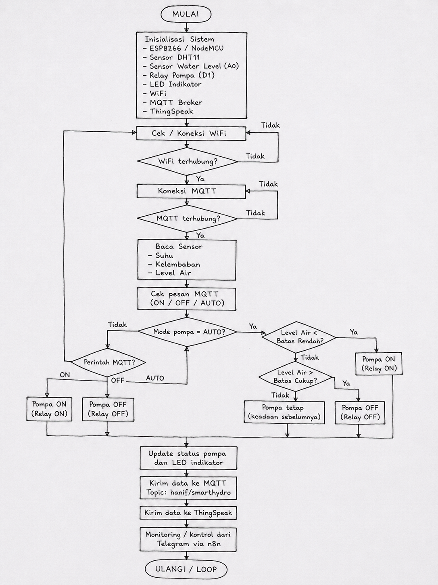

Sistem monitoring dan kontrol pompa otomatis menggunakan ESP8266, DHT11, HC-SR04, MQTT, n8n, Telegram, dan ThingSpeak.
Penjelasan singkat mengenai sistem Smart Hydroponic.
Smart Hydroponic adalah sistem IoT yang digunakan untuk memantau suhu, kelembaban, dan ketinggian air pada sistem hidroponik. Sistem ini dapat mengontrol pompa secara otomatis berdasarkan level air, serta dapat dikontrol manual melalui Telegram menggunakan n8n dan MQTT.
Fitur utama yang terdapat pada project.
Membaca suhu, kelembaban, jarak air, dan level air secara berkala.
DHT11 + HC-SR04Pompa dapat menyala otomatis saat air rendah dan mati saat air cukup.
RelayMengatur SSID dan password WiFi tanpa perlu mengubah coding.
192.168.4.1Mengontrol pompa dengan perintah ON, OFF, AUTO, dan RESET_WIFI.
n8n + MQTTMenampilkan data sensor dalam bentuk dashboard monitoring online.
DashboardMemberikan peringatan jika air rendah, suhu tinggi, atau kelembaban tidak normal.
n8nDaftar komponen yang digunakan.
Mikrokontroler utama sistem.
Sensor suhu dan kelembaban.
Sensor ultrasonic untuk membaca jarak air.
Saklar elektronik untuk mengontrol pompa.
Mengalirkan air pada sistem hidroponik.
Menampilkan status MQTT dan pompa.
Tabel koneksi pin ESP8266.
| Komponen | Pin NodeMCU | GPIO | Keterangan |
|---|---|---|---|
| DHT11 | D5 | GPIO14 | Input suhu dan kelembaban |
| Relay Pompa | D1 | GPIO5 | Output kontrol pompa |
| HC-SR04 TRIG | D0 | GPIO16 | Output trigger ultrasonic |
| HC-SR04 ECHO | D2 | GPIO4 | Input echo ultrasonic lewat pembagi tegangan |
| LED MQTT | D6 | GPIO12 | Indikator koneksi MQTT |
| LED Pompa OFF | D7 | GPIO13 | Indikator pompa mati |
| LED Pompa ON | D8 | GPIO15 | Indikator pompa menyala |
Tempat untuk menampilkan wiring, diagram blok, interfacing, dan flowchart.




Urutan kerja program Smart Hydroponic.
Materi coding sudah dipisah per fungsi agar mudah dipelajari sebelum exam.
Pembacaan DHT11, HC-SR04, hitung level air, dan kontrol relay pompa otomatis.
MQTTKoneksi broker, subscribe command Telegram, publish JSON data sensor, dan reconnect MQTT.
DashboardPengiriman suhu, kelembaban, level air, status pompa, dan mode ke field ThingSpeak.
AutomationFunction node untuk format pesan monitoring, alert, dan mapping command Telegram ke MQTT.
ProcessingCode JavaScript untuk parse payload MQTT, validasi sensor, dan membuat status emergency.
ModularCoding project yang dipisah menjadi config, hardware, sensor, pump, MQTT, ThingSpeak, WiFi, dan main.
ConfigTemplate konfigurasi untuk MQTT, ThingSpeak, dan Telegram agar credential mudah diganti.
GabunganSatu halaman khusus berisi main ESP dan n8n code, tanpa menggabungkan WiFi Manager.
WiFiPortal setup SSID dan password di 192.168.4.1. Tetap dibuat sebagai satu file khusus.
Contoh tabel hasil pengujian project.
| No | Pengujian | Hasil | Keterangan |
|---|---|---|---|
| 1 | ESP8266 konek WiFi | Berhasil | ESP mendapat IP dari router |
| 2 | DHT11 membaca suhu | Berhasil | Data suhu tampil di serial monitor |
| 3 | HC-SR04 membaca jarak | Berhasil | Jarak air tampil dalam cm |
| 4 | Pompa ON/OFF | Berhasil | Relay dapat mengontrol pompa |
| 5 | Data masuk MQTT | Berhasil | Payload diterima n8n |
| 6 | Dashboard ThingSpeak | Berhasil | Data tampil pada grafik |
Masalah yang sering terjadi dan solusinya.
Simpan coding sebagai main.py di ESP8266, jangan terus-menerus Run dari Thonny.
Pastikan HP/laptop sudah konek ke hotspot SmartHydro-Setup.
Cek relay aktif LOW/HIGH dan pastikan kabel relay memakai COM dan NO.
Cek pin TRIG/ECHO, GND, dan pembagi tegangan pada pin ECHO.